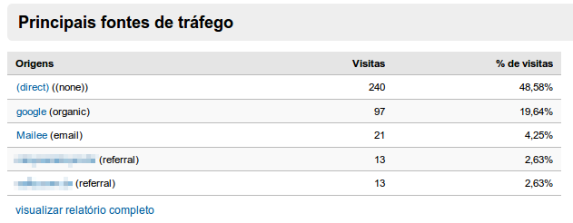
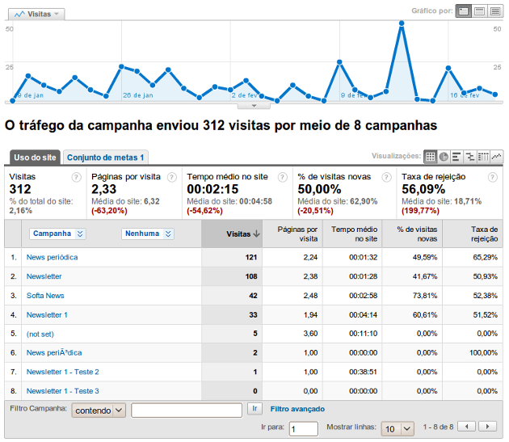

1 Colocando Google Analytics em seu site
Para colocar o Google Analytics em seu site e aprendeer o básico, acesse a documentação oficial. Lá você vai encontrar este artigo específico sobre a instalação do código de tracking.
Existem alguns tutoriais bem completos em português, também. Acesse:
2 Enviar mensagens integradas ao Analytics
Enviar suas mensagens no Mailee.me corretamente integradas ao Analytics é muito simples. Basta, ao criar uma campanha, marcar o campo “Analytics?” (ele já vem marcado por padrão).
Uma vez feito isto, quando um contato clicar em algum link de sua mensagem, ele será redirecionado ao link original com os dados que o Analytics precisa acrecidos. Por exemplo, se você tem um link para
http://www.seudominio.com/produto.php
o Mailee.me redirecionará para a página
http://www.seudominio.com/produto.php?utm_source=Mailee&utm_medium=email&utm_campaign=CAMPANHA&utm_term=&utm_content=MENSAGEM
onde CAMPANHA é o título da campanha e MENSAGEM o título da mensagem. Estas informações são, então, lidas pelo Google Analytics.
Quando você acessar seu painel de controle no Analytics, você poderá ver os resultados comparativos de fontes em Fontes de tráfego (Traffic Sources) na Visão geral, como na imagem abaixo.

E em Campanhas você verá este resultado segmentado por campanhas e mensagens como na imagem abaixo.
